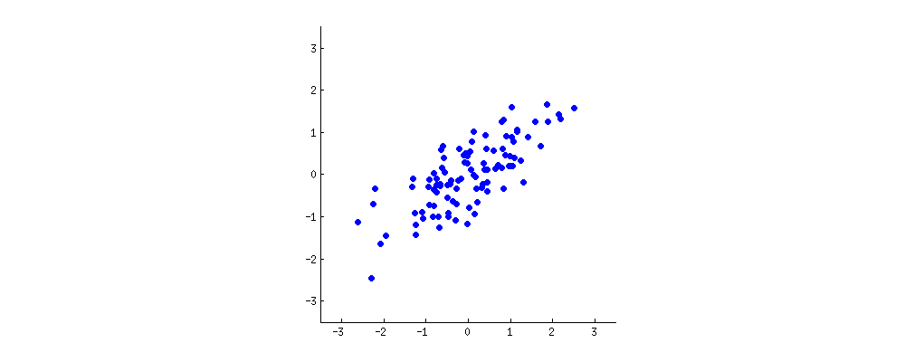

U Talkin' UMAP to Me?
Chris Remmel | 2020-09-13
Who I Am
What is Dimensionality Reduction?
Why would you do this?
Reason 1: Dealing with Multicollinearity
Why would you do this?
Reason 2: Visualization
The Methods to Know
- PCA
- T-SNE
- UMAP
PCA
PCA

PCA

Wisconsin Breast Cancer Dataset
Wisconsin Breast Cancer Dataset
This is what a scree is
Handdrawn Digits Dataset

Digits PCA
Digits PCA Scree
T-SNE and UMAP
Graph-Based
T-SNE
- t-Distributed
- Stochastic
- Neighbor
- Embedding
UMAP
The New Kid on the Block
UMAP
- Uniform
- Manifold
- Approximation and
- Projection
Why UMAP Instead of T-SNE?
- It's much, MUCH faster
- Theoretically better preservation of global structure
- The hyperparameters are more intuitive
Digits PCA
Digits T-SNE
Digits UMAP
McDonalds PCA
McDonalds UMAP
Generalized UMAP Analysis Process
- Perform UMAP Clustering using many different values for n_neighbors
- Make subjective judgement for n_neighbors that makes sense, if any
- Perform clustering using algorithm appropriate to structure
- T-test clusters to investigate what features are driving UMAP structure
- Permute labels and t-test repeatedly to decide if significance is likely by chance